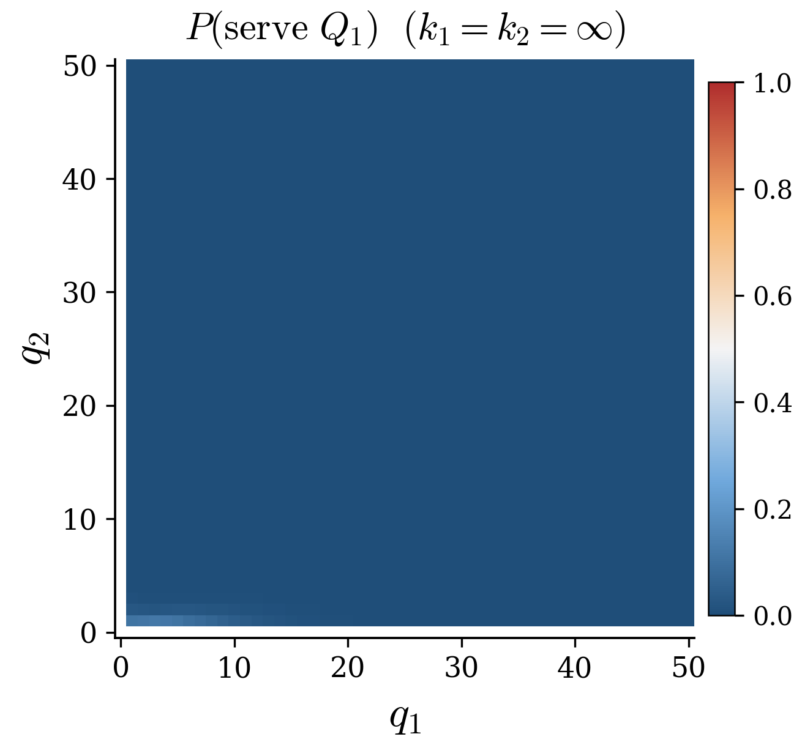
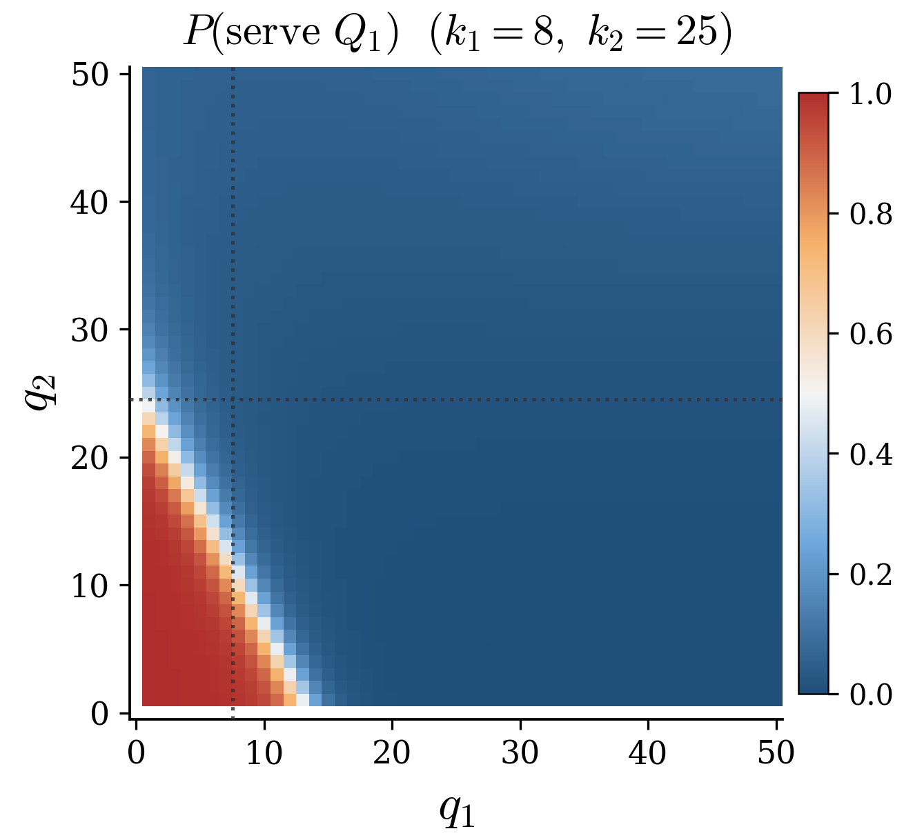
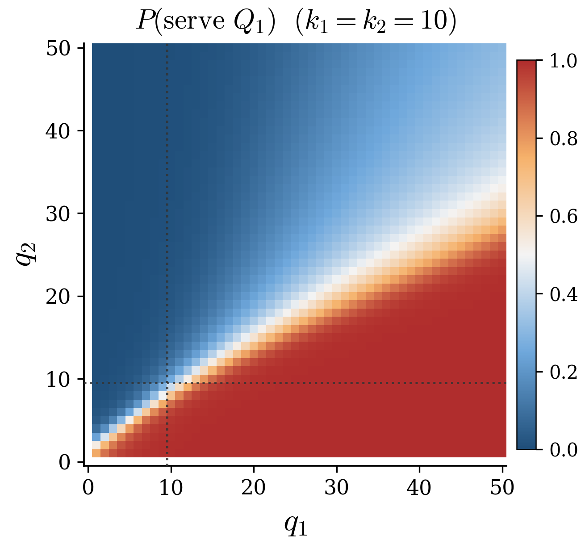
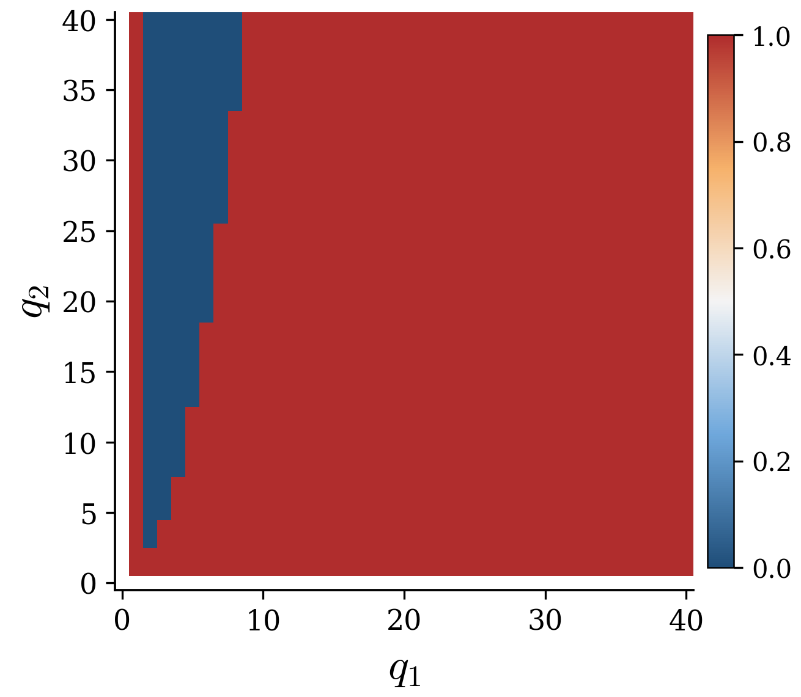
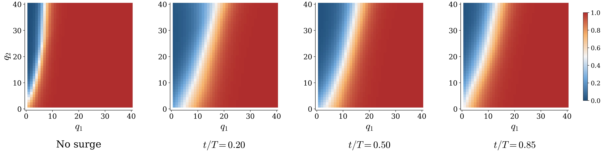
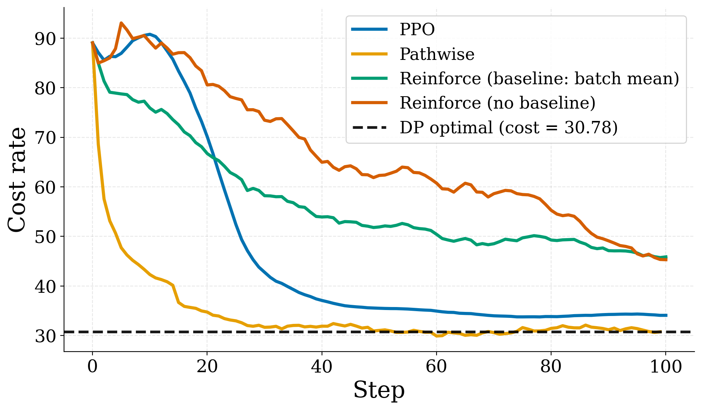
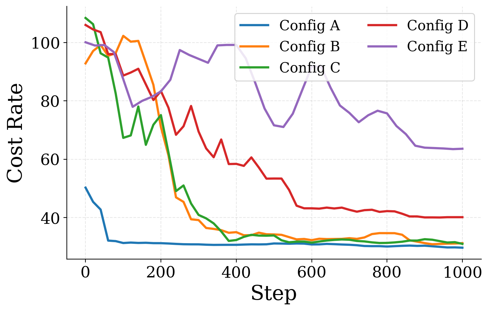
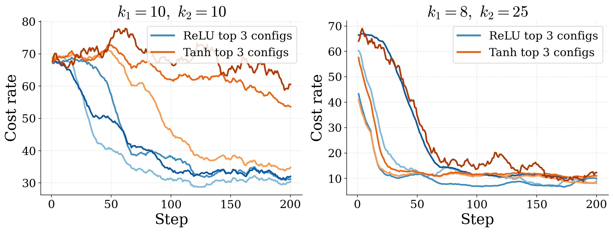
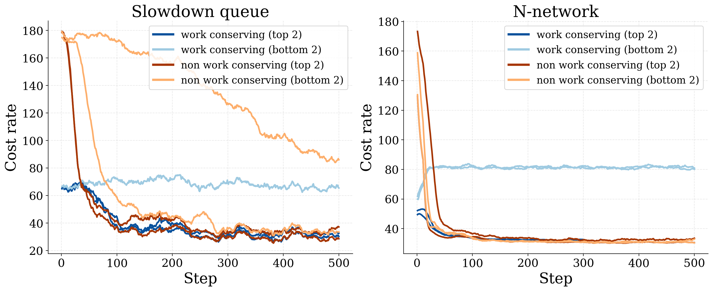

Empirical Rigor Through Benchmarking in Operations Research
Empirical Findings Enabled by Structural Benchmarks
Stochastic Operations Research has a rich tradition of deriving structural insights through theoretical analysis, with parsimonious mathematical models yielding foundational results in sequential decision-making under uncertainty. Systematic empirical evaluation, however, is often limited to small-scale numerical examples that are difficult to compare across studies. This stands in stark contrast to fields like machine learning, where standardized benchmarks have catalyzed rapid progress. Stochastic OR needs an analogous benchmarking culture that can discipline empirical claims, reveal the practical relevance of algorithmic ideas, and accelerate innovation.
This paper argues for one and shows what it would surface across two canonical queueing models and five case studies. The first two studies probe the brittleness of analytical baselines once classical assumptions are perturbed; the next three turn to learning-based methods and probe the sample complexity of competing algorithms, the hyperparameter sensitivity of any one of them across an instance family, and the unexpected effects of imposing structural restrictions on the policy class.
Five case studies, two themes
The first two studies highlight the brittleness of widely used researcher-driven policies: policies validated under clean theoretical assumptions that prove sensitive to modest deviations. The remaining three turn to learning-based methods, each illustrating a distinct way a benchmark contributes to their development.
Two-class single-server queue
One server, two Poisson streams. Decide which class to serve at each completion; the classical optimum is the cμ-rule. We then perturb service rates with state-dependent slowdown, an effect invisible to cμ, and ask whether the baseline still holds.
N-Model
Two queues, two servers in an "N" topology with one dedicated + one flexible server and asymmetric holding costs; the heavy-traffic optimum is a static threshold (Harrison 1998). We then drop the flexible server's rate to 40% during a window of the horizon and ask whether the static rule still survives the non-stationarity.
Algorithm families
Compare four learning-based methods (PPO, a pathwise gradient estimator, two REINFORCE variants) on a shared environment, with hyperparameters tuned per method. How does sample complexity depend on the information interface to the simulator?
Hyperparameter sensitivity
Sweep PPO configurations on one slowdown instance, then across five. Are hyperparameter rankings stable across instances, and which choices drive performance versus merely stabilise training?
Restricting the policy class
Compare PPO with and without a work-conservation action mask, on both canonical models. Does encoding the constraint into the policy class actually accelerate learning, or does it distort the gradient signal?
Cite this work
If this work helped your research, please cite the paper.
@article{dong2026empirical,
title = {Empirical Rigor Through Benchmarking in Operations Research},
author = {Dong, Jing and Mittal, Daksh and Namkoong, Hongseok},
journal = {Operations Research (under review)},
year = {2026},
url = {https://arxiv.org/abs/XXXX.XXXXX},
}Two-class single-server queue
A scheduling problem with hidden state-dependence
A single server faces two streams of arriving customers and must repeatedly decide which class to serve. Class-i customers (i ∈ {1, 2}) arrive as independent Poisson processes with rates λi and require exponential service at class-dependent rates μi. Performance is the time-averaged holding cost h1q1(t)+h2q2(t).
Under classical assumptions the optimal policy is the cμ-rule. We then perturb the setting with state-dependent slowdown: when qi reaches a threshold ki, μi drops to 0.1·μi. The slowdown is invisible to the cμ-rule, which acts only on instantaneous service rates and holding costs.
Does the analytical baseline still hold once service rates depend on the state of the queues?
Pick a regime: results
A sanity check the algorithm passes
Fixed service rates, linear holding costs, work-conserving server. The cμ-rule is provably optimal. A learning algorithm trained from black-box interaction alone should recover that prescription, and it does, to within statistical noise.
| Policy | Cost rate | Notes |
|---|---|---|
| cμ-rule baseline | 2.007 ± 0.066 | analytical optimum |
| Random baseline | 2.036 ± 0.067 | work-conserving |
| PPO | 2.007 ± 0.066 | recovers cμ-rule |
PPO matches the cμ-rule to within statistical noise; useful before perturbing the setting.

When the baseline favours the wrong class
Queue 1's threshold k1=8 is tight; queue 2's k2=25 is rarely binding. Protecting class 1 against the 10× rate drop becomes essential, the opposite of what the cμ-rule prescribes.
| Policy | Cost rate | vs PPO |
|---|---|---|
| cμ-rule baseline | 66.540 ± 2.590 | 9.2× |
| Random baseline | 70.210 ± 5.190 | 9.7× |
| PPO | 7.252 ± 1.504 | 1.0× |
PPO cuts cost by ≈89%. The cμ-rule is more than 9× worse than its own performance in the unperturbed setting.

When there is no class to favour
Both thresholds are equally tight. The agent must continuously balance slowdown risk across both classes; there is no longer a single "right" class to prioritise. The cμ-rule is now worse than uniform random scheduling.
| Policy | Cost rate | vs PPO |
|---|---|---|
| cμ-rule baseline | 95.600 ± 6.780 | 3.1× |
| Random baseline | 69.400 ± 7.040 | 2.3× |
| PPO | 30.727 ± 5.576 | 1.0× |
PPO cuts cost by ≈68%, and uniform random scheduling beats the cμ-rule.

Cross-instance robustness
Train PPO on each of five slowdown configurations, evaluate every trained policy on every configuration. Hover or tap a cell. Values are PPO cost divided by the cost PPO achieved when trained and evaluated on that instance. 1.0× 2× 3× 5× ≥10×
k₂=25
k₂=200
=10
=20
slowdown
You can ask "can the algorithm produce a competent policy for a given instance?", or you can ask "is the produced policy robust across a specified set of environments?" A benchmark that spans an instance family supports both modes and makes the choice explicit.
Setup: two-class single-server queue
A single server faces two streams of arriving customers and must repeatedly decide which class to serve. Class-i customers (i ∈ {1,2}) arrive according to independent Poisson processes with rates λi and require exponentially distributed service with class-dependent rates μi. At each decision epoch (a service completion or the server becoming idle), the agent selects which class to serve.
Performance is the time-averaged holding cost
(1/T) ∫0T (h1·q1(t) + h2·q2(t)) dt,
where qi(t) is the number of class-i customers in the system at time t.
Parameters
State-dependent slowdown (added perturbation)
Whenever the number of class-i customers reaches a threshold ki, the service rate for that class degrades from μi to βi·μi with βi = 0.1. Each queue has a buffer capacity qmax = 150. The mechanism is invisible to the cμ-rule, which acts only on instantaneous service rates and holding costs.
Baselines
- cμ-rule: serve the class with the largest hi·μi. Analytically optimal under classical assumptions.
- Random: uniform work-conserving.
- PPO: Proximal Policy Optimization (Dai & Gluzman 2022) interacting with the simulator without privileged knowledge of the analytical structure.
Evaluation
All simulation-based estimates are reported with 95% half-widths over 500 independent evaluation trajectories.
N-Model
A routing problem under non-stationarity
Two queues are served by two servers in an "N" topology. Server 1 is dedicated to queue 1 at rate μ11. Server 2 is flexible and the agent's control: it can serve queue 1 at rate μ21 or queue 2 at rate μ22. Arrivals follow independent Poisson processes with rates λ1, λ2. Performance is the time-averaged holding cost h1q1(t)+h2q2(t), with h1=10, h2=1.
Under classical stationary conditions a static threshold rule routing server 2 to queue 1 whenever q1 exceeds a fixed level is asymptotically optimal under heavy-traffic scaling. We then perturb the setting with a service-rate surge: μ21 drops to 40% of nominal during a window in the middle of the horizon.
Does a static threshold rule, calibrated for stationarity, still produce a competent policy when capacity drops mid-horizon?
Pick a regime: results
Recovering the DP optimum
With state space bounded at qi≤300 we compute the dynamic-programming optimum exactly, giving a ground-truth lower bound. A learning algorithm should match this; the static heavy-traffic threshold, while asymptotically optimal, leaves a small gap.
| Policy | Cost rate | Type |
|---|---|---|
| DP optimal | 30.785 | exact |
| Static threshold q1>5 | 32.632 | exact |
| PPO | 30.987 ± 0.303 | learned |
| Random | 79.610 ± 2.864 | work-cons. |
PPO matches the DP optimum to within statistical noise; the learned policy tracks the optimal threshold structure with a slightly smoother boundary.

When the threshold rule cannot adapt
During t ∈ [0.35T, 0.70T], μ21 drops to 40% of nominal. The static threshold rule conditions only on instantaneous queue lengths, so it cannot react. PPO, with access to the time component of the state, pivots its routing during the surge and recovers when capacity returns.
| Policy | Cost rate | vs PPO |
|---|---|---|
| PPO (final) | 39.259 ± 0.876 | 1.00× |
| Static threshold q1>5 | 43.253 ± 1.214 | 1.10× |
| Random | 75.549 ± 2.125 | 1.92× |
PPO cuts cost by ≈10% over the static threshold. More instructive than the gap: the shape of the PPO policy changes over time.

Setup: N-Model
Two queues are served by two servers in an "N" topology (Harrison 1998). Server 1 is dedicated to queue 1 and processes class-1 customers at rate μ11. Server 2 is flexible: it can serve queue 1 at rate μ21 or queue 2 at rate μ22. The routing of server 2 is the agent's control.
Arrivals follow independent Poisson processes with rates λ1, λ2. Performance is the time-averaged
holding cost (1/T) ∫0T (h1q1(t) + h2q2(t)) dt.
The asymmetric holding costs make queue 1 substantially more expensive to leave congested, which motivates routing the flexible
server toward it. Service is preemptive and servers are work-conserving.
Parameters
Service-rate surge (added perturbation)
During the window t ∈ [0.35T, 0.70T] with horizon T = 1500, the flexible server's rate for queue 1 drops to 40% of nominal: μ21 → 0.4·μ21. Outside this window, parameters revert to the stationary baseline. The disruption is exposed through the time component of the state, yet it is invisible to a static threshold rule that conditions only on instantaneous queue lengths.
Baselines
- DP optimal: exact dynamic-programming optimum on the bounded state space; provides a ground-truth lower bound (stationary setting only).
- Static threshold: route server 2 to queue 1 whenever q1>5. Asymptotically optimal under heavy-traffic scaling (Harrison 1998).
- Random: uniform work-conserving.
- PPO: Proximal Policy Optimization (Dai & Gluzman 2022).
Evaluation
All simulation-based estimates are reported with 95% half-widths over 500 independent evaluation trajectories.
Comparing algorithmic families
How fast can different learners reach the optimum?
We benchmark four representative learning-based algorithms on the N-model in its stationary setting (the same regime where we know the dynamic-programming optimum exactly). All four are scored on a shared environment with hyperparameters grid-tuned per method, so differences reflect the algorithms themselves rather than tuning effort.
The methods differ in what information they ask of the simulator: black-box methods (PPO, REINFORCE) see only state, action, and a scalar reward; the pathwise estimator backpropagates through a differentiable discrete-event simulator. That structural information is what makes the comparison interesting.
Which family converges fastest, and how much of the advantage comes from the information interface?
Result: sample complexity
Cost rate vs. PPO updates on the N-model stationary setting. Each line is the best-tuned configuration for that algorithm; the dashed line is the DP optimum (30.785).

The pathwise gradient estimator reaches the DP optimum substantially faster than the score-function methods. REINFORCE variants approach the optimum more slowly and with higher variance, but eventually get there given enough simulator budget.
Takeaways
The pathwise estimator's advantage stems from access to simulator gradients, not network architecture. Black-box methods cannot match it on this environment.
Without a common testbed and protocol, sample-complexity improvements are hard to validate. Benchmarks make those claims falsifiable.
The relative ordering can shift with horizon and regime; we report the stationary N-model here, but other settings may rank algorithms differently.
The configurations shown were each grid-searched. Methods that need less tuning are easier to adopt, a dimension separate from sample efficiency.
Hyperparameter sensitivity
Which choices drive performance, and which only stabilise it?
Modern learning-based methods come with many tunable hyperparameters: learning rate, batch size, gradient-clipping threshold, network architecture, activation function, entropy coefficient. Different defaults are reported across the literature with little a priori basis for choosing among them.
We run two sweeps on the two-class single-server queue with slowdown. First, a small sweep (Configs A–E) on a single instance to show how much the choice of configuration alone matters. Second, a larger sweep (Configs 1–12) across five slowdown instances, normalising each cell by the best configuration on that instance.
Are hyperparameter rankings consistent across instances, and which choices merely stabilise training versus drive final performance?
Sweep A–E on a single instance
Symmetric tight slowdown, k₁=k₂=10. Final cost rates differ by more than 2× across configurations.

The gaps are large enough that a single-instance experiment with an unfortunate hyperparameter choice could plausibly be misread as evidence that PPO is uncompetitive on this instance, when in fact a different configuration of the same algorithm is.
Sweep 1–12 across the instance family
Twelve configurations × five slowdown instances. Each cell is normalised by the best configuration on that instance. Hover any cell to see what's in that config.
The winner on k₁=8, k₂=25 is not the winner on k₁=k₂=10. A practitioner tuning on a single instance over-fits to that instance's idiosyncrasies; reporting sweeps on a single instance may overstate the robustness of any individual claim.
Some hyperparameters stabilise, others swing
Top-3 ReLU vs. Tanh configurations on two slowdown instances. ReLU produces tighter clusters across the surrounding hyperparameter sweep.

ReLU acts as a stabilising element rather than merely an architectural detail. The activation choice tightens the cluster of nearby configurations, so other hyperparameters matter less when ReLU is fixed.
Takeaways
The winning configuration on one instance can be 2.5× worse on another. Practitioners who tune on one instance bake in idiosyncrasies of that instance.
ReLU vs. Tanh in this study isn't just an architectural detail. Stabilisers reduce sensitivity to the rest of the configuration and can be fixed without further tuning.
An instance family is the natural setting for hyperparameter claims. Single-instance sweeps remain useful for ablations, not for robustness.
How much grid-search did a result need? Algorithms that need less tuning are more useful in practice, separate from how good they look at their peak.
Restricting the policy class
Does encoding domain knowledge into the policy help?
A natural intuition in applying learning-based methods to operational problems is that incorporating structural knowledge should improve performance. One concrete way to do this is to restrict the policy class: mask actions that violate work-conservation, so the agent never sees the option of idling a server when work is available.
Reducing the search space should, in principle, accelerate learning and improve the quality of the converged policy. We test this intuition on two environments we've already used as testbeds: the symmetric tight slowdown instance of the two-class queue and the stationary N-model.
Does masking non-work-conserving actions speed up learning, or does the constraint distort the gradient signal?
Result: training curves on both environments
Symmetric tight slowdown (left) and stationary N-model (right). Each pair compares PPO with and without the work-conservation mask.

In both environments the non-masked variant converges at least as quickly and reaches at least as low a final cost. The masked variant is the one with noticeably higher run-to-run variability, the opposite of the conventional intuition.
Takeaways
The effect of structural restriction interacts with the algorithm and the environment. The intuition should be tested rather than assumed.
A plausible explanation: the work-conservation constraint distorts the gradient signal in a way PPO's clipped objective handles less gracefully than alternative algorithms.
Whether the finding extends to other policy-gradient methods is exactly the kind of follow-up question a shared environment makes addressable, and reproducible.
The masked variant didn't lose on average cost; it lost on stability across runs. Reporting run-to-run variance is what surfaced this.